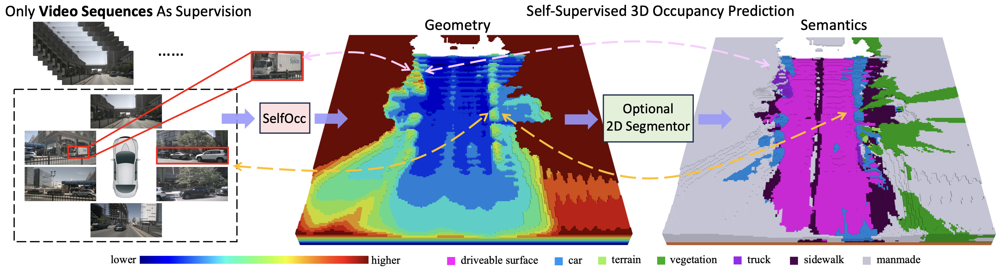
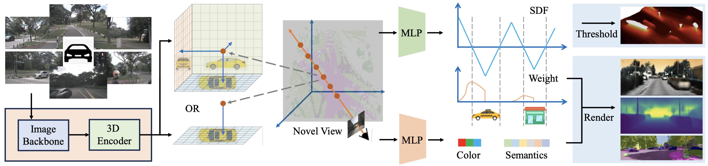
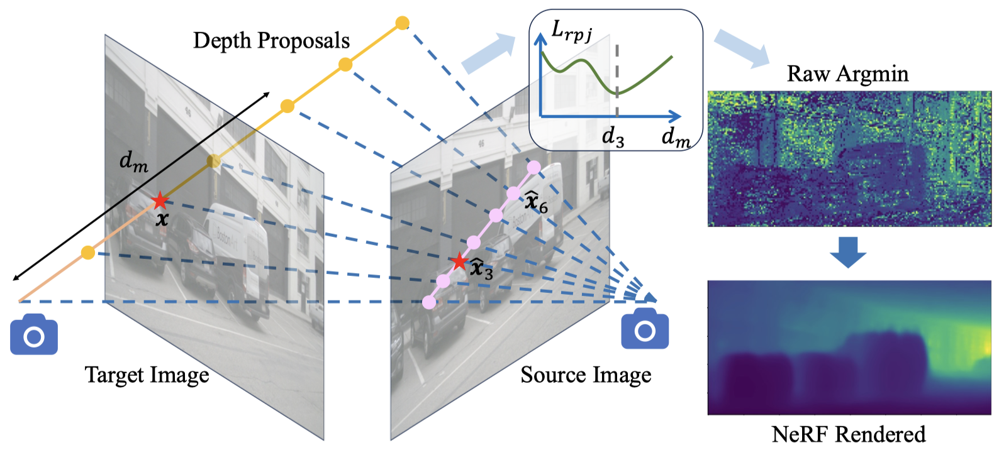
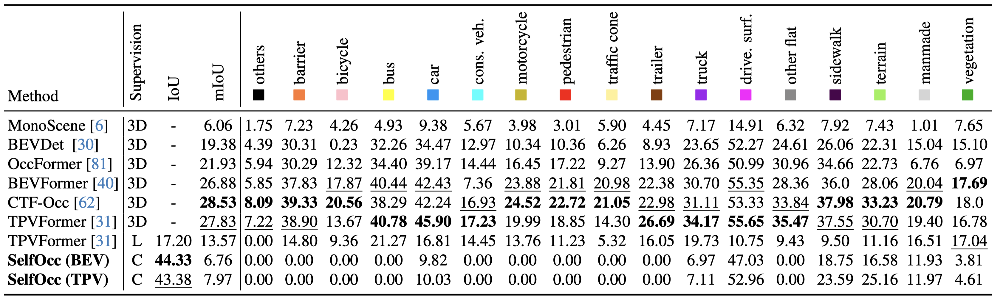
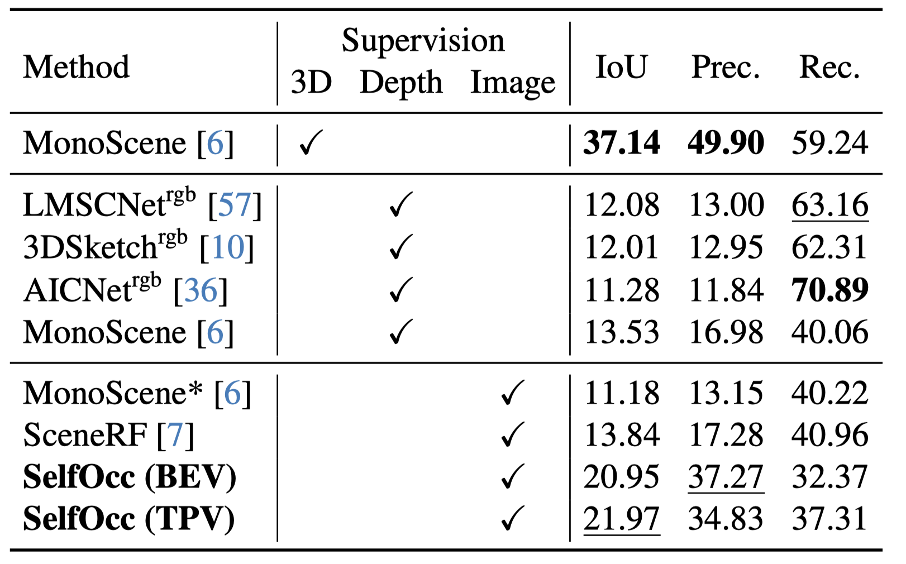

Demo
SelfOcc trained using only video sequences and poses:
SelfOcc trained using an additional off-the-shelf 2D segmentor:

Overview of our contributions. Trained with only video sequences as supervision, our model can predict meaningful geometry for the scene given surround-camera RGB images, which can be further extended to semantic occupancy prediction if 2D segmentation maps are available e.g. from an off-the-shelf segmentor. This task is challenging because it completely depends on video sequences to reconstruct scenes without any 3D supervision. We observe that our model can produce dense and consistent occupancy prediction and even infer the back side of cars.
Method
We first transform the images into the 3D space (e.g., bird's eye view) to obtain 3D representation of the scene. We directly impose constraints on the 3D representations by treating them as signed distance fields (SDFs). We can then render 2D images of previous and future frames as self-supervision signals to learn the 3D representations. We use simple 0-thresholding to predict the occupancy volume.

We further propose an MVS-embedded strategy to directly optimize the SDF-induced weights with multiple depth proposals, which effectively enlarges the receptive field of the depth optimization process across the whole epipolar line.
Results
We perform three tasks: 3D occupancy prediction, novel depth synthesis, and depth estimation. For all tasks, our model is trained without 3D supervisions.
3D Occupancy Prediction
For surround-view 3D occupancy prediction, SelfOcc is the first self-supervised method that is able to produce reasonable occupancy results using only video supervision on Occ-3D.

For monocular 3D occupancy prediction, SelfOcc outperforms the previous best method SceneRF by 58.7% with an IoU of 21.97 over 13.84 on SemanticKITTI.
Our method achieves comparable visualization quality with ground truth for both semantic and geometric occupancy prediction tasks.

Novel Depth Synthesis
SelfOcc achieves the best results on both SemanticKITTI and nuScenes.


Depth Estimation
SelfOcc demonstrates competitive performance on both surrounding and monocular self-supervised depth estimation.


Bibtex
@article{huang2023self,
title={SelfOcc: Self-Supervised Vision-Based 3D Occupancy Prediction},
author={Huang, Yuanhui and Zheng, Wenzhao and Zhang, Borui and Zhou, Jie and Lu, Jiwen},
journal={arXiv preprint arXiv:2311.12754},
year={2023}
}